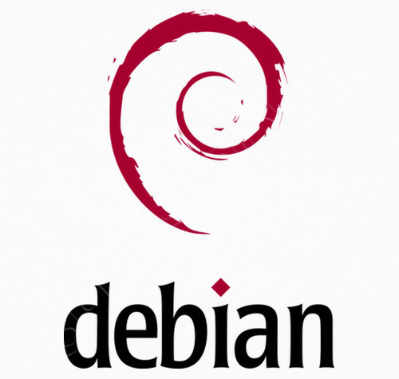

Ya os hablé de como instalar aplicaciones o servicios a la última en vuestra Raspberry, servidor… utilizando Docker.
Hoy os muestro un pequeño ejemplo de como montar un Docker con Debian Testing, una versión de Debian donde encontraremos paquetes más actualizados que la versión actual de Raspbian, que es una versión muchisímo más estable.
También puede servirnos para hacer pruebas, tal como expliqué en el Podcast, sin peligro a romper nada de nuestra Raspberry.
docker run -it --name debian_testing \
--restart=unless-stopped \
--network host \
-e LANGUAGE=en_ES.UTF-8 \
-e TZ=Europe/Madrid \
-v $HOME/:/root debian:testing-slim \
bash
Significado de los tags:
debian_testingPublicado por Angel el domingo 21 abril del 2019
También te puede interesar:
Powered by org-bash-blog
Writing in orgmode whith emacs

Este obra está bajo una licencia de Creative Commons Reconocimiento-NoComercial-CompartirIgual 4.0 Internacional.